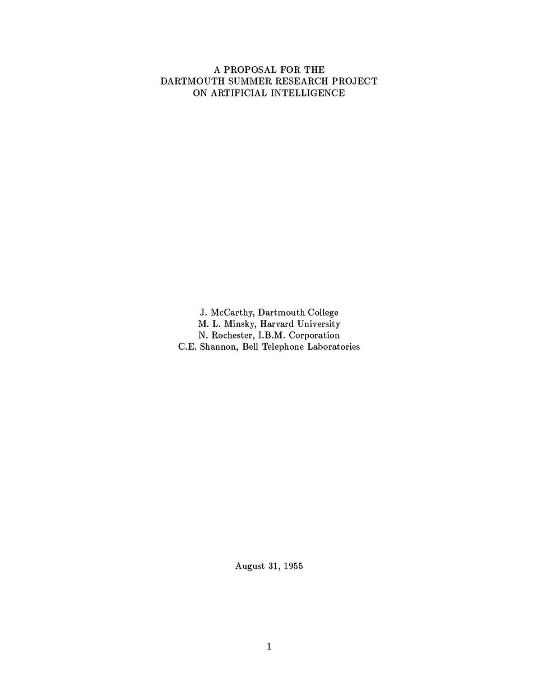
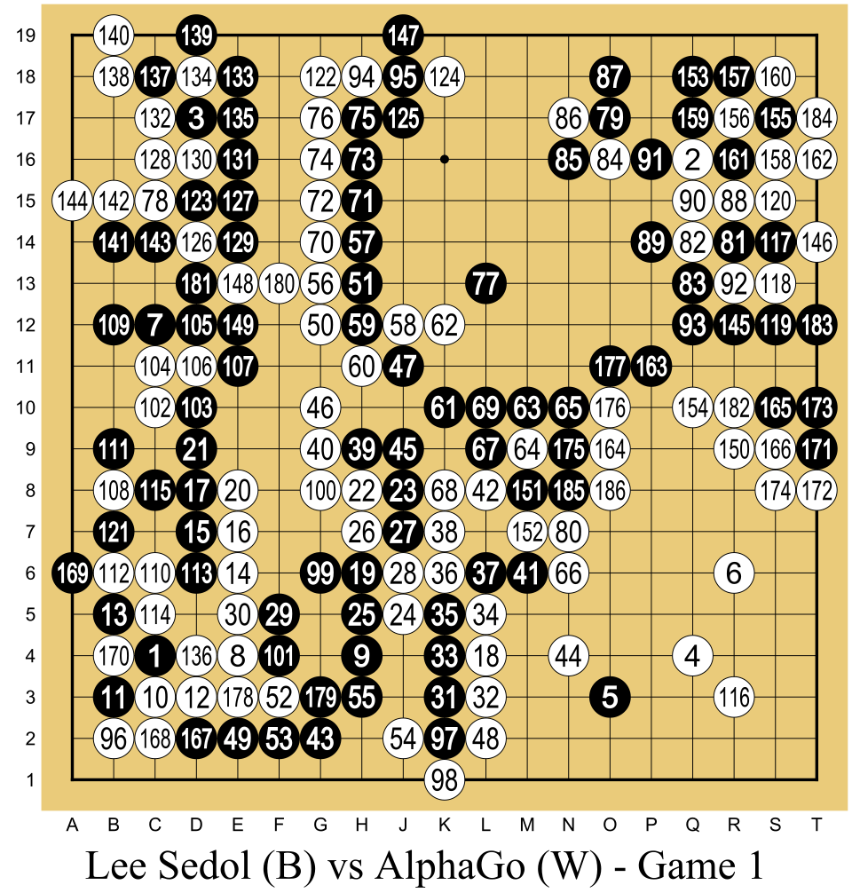
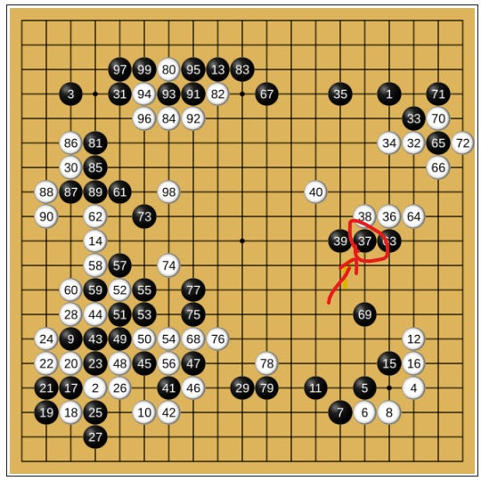

Situar los sistemas expertos en la historia de la IA
Formular un problema como búsqueda
Explicar la arquitectura de un sistema experto
Trazar a mano el encadenamiento hacia adelante y hacia atrás
Argumentar el papel de las reglas en la era de los LLMs
Caso hilo · MantenIA
Empresa ficticia de mantenimiento industrial en el Eje Cafetero: 12 técnicos y 300 equipos bajo contrato.
El diagnóstico de las fallas complejas depende de dos técnicos senior.
¿Qué es la IA?
Cuatro maneras de definir la inteligencia artificial
Como los humanos
Racionalmente
Pensar
Modelado cognitivo
Reproducir cómo pensamos (ciencia cognitiva)
Leyes del pensamiento
Razonar con lógica formal
Actuar
Prueba de Turing
Comportarse de forma indistinguible de un humano (1950)
Agente racional
Hacer lo correcto según una medida de desempeño · enfoque de este curso
Fuente: Russell y Norvig (2021), Artificial Intelligence: A Modern Approach, 4.ª ed., cap. 1.
Historia
1956: Dartmouth le da nombre al campo
«…todo aspecto del aprendizaje o cualquier otro rasgo de la inteligencia puede, en principio, describirse con tanta precisión que una máquina pueda simularlo».
McCarthy, Minsky, Rochester y Shannon (1955), propuesta del proyecto de verano en Dartmouth
La propuesta acuñó el término inteligencia artificial y fijó una agenda: lenguaje, redes neuronales, abstracción, automejora y creatividad.

Portada de la propuesta (31 de agosto de 1955). Dominio público. Wikimedia Commons
Historia
Primaveras e inviernos de la IA
SimbólicaConexionistaNeurosimbólicaInviernos: caída de expectativas y de financiación
Primera ola
IA simbólica: razonar con conocimiento explícito
DENDRAL (1965): inferir estructuras moleculares a partir de datos de espectrometría
MYCIN (década de 1970): diagnosticar infecciones y recomendar antibióticos
Deep Blue (1997): búsqueda masiva que vence a Kasparov
Fortaleza: explicable y verificable. Límite: frágil fuera de su dominio; capturar el conocimiento es costoso.
Percepción, lenguaje y escala: aprenden de ejemplos sin reglas escritas a mano
Límites
Opacidad, alucinaciones y dependencia de datos y cómputo
Tercera ola
Neurosimbólica: aprender y razonar a la vez
AlphaGo vence 4–1 a Lee Sedol (2016)
Redes neuronales: la intuición, qué jugadas mirar y quién va ganando
Búsqueda en árbol Monte Carlo: el razonamiento, explorar consecuencias
Lectura de esta sesión: Garcez y Lamb (2023), Neurosymbolic AI: The 3rd Wave

Partida 1, Lee Sedol (negras) vs AlphaGo (blancas), marzo de 2016. Diagrama: Wesalius, CC BY-SA 4.0, Wikimedia Commons

Partida 2, 10 de marzo de 2016: AlphaGo (negras) vs Lee Sedol (blancas), primeras 99 jugadas; el 37 está en P10. Registro de la partida: Wikipedia, CC BY-SA 4.0.
Tercera ola · Seúl, 2016
El movimiento 37
Un golpe de hombro en la quinta línea, contra la intuición de los profesionales
Según los datos de AlphaGo, un humano la habría jugado con probabilidad de 1 en 10.000
Los comentaristas creyeron que era un error; Lee Sedol salió de la sala y tardó casi 15 minutos en responder
En la partida 4, su jugada 78, también de 1 en 10.000, le dio su única victoria
Áreas de la IA
Áreas de investigación y el mapa de este curso
Conocimiento y razonamiento
U1U3
Planificación
U2
Percepción y visión
U4
Aprendizaje profundo
U5
Aprendizaje de máquina
U6
Incertidumbre y decisión
U7
Sistemas multiagente
U1
Sistemas híbridos
U8
Aplicaciones: salud, finanzas, manufactura, logística, educación y sector público
Resolver problemas con IA
Primero, formular el problema
MantenIA: una técnica debe visitar 4 plantas hoy y volver a la base.
Estado
Dónde está la técnica y qué plantas le faltan
Acciones
Desplazarse a una planta pendiente
Meta
Todas visitadas y de regreso en la base
Costo
Tiempo total de desplazamiento
Formular bien es la mitad de la solución: decide qué se optimiza y qué se ignora.
Resolver problemas con IA
El espacio de estados crece de forma explosiva
Plantas
Órdenes de visita posibles
4
24
10
3.628.800
20
≈ 2,4 × 1018
Con 20 plantas, revisar mil millones de rutas por segundo tomaría unos 77 años
No se puede enumerar: hay que buscar con inteligencia.
Resolver problemas con IA
Búsqueda heurística: la intuición de A*
f(n) = g(n) + h(n)
g: costo real desde la base · h: estimación optimista hasta la meta
Expandir Base: A (f = 8), B (f = 7)
Expandir B, la de menor f: C (f = 7)
Expandir C: D (f = 7)
Ruta óptima Base → B → C → D, costo 7. A nunca se expandió.
Resolver problemas con IA
Una heurística es conocimiento del dominio convertido en estimación
Admisible: nunca sobrestima el costo real; así A* garantiza la ruta óptima
Mejor heurística, menos estados explorados
Ejemplos: la distancia en línea recta; el "olfato" del despachador experimentado
Puente: ¿y si el conocimiento del experto no es una estimación sino un conjunto de reglas para decidir? → sistemas expertos
Caso MantenIA
El conocimiento vive en la cabeza de dos personas
Dos técnicos senior diagnostican la mayoría de las fallas complejas. Uno se jubila el próximo año.
¿Cómo capturar ese conocimiento para que otros, y una máquina, puedan usarlo?
Sistemas expertos
Sistema experto: conocimiento experto, explícito y ejecutable
Programa que resuelve problemas de un dominio acotado razonando con conocimiento experto representado de forma explícita.
MYCIN · Stanford, década de 1970
Infecciones y antibióticos con unas 450–500 reglas. En una evaluación ciega (JAMA, 1979) logró 65 % de aceptabilidad, frente a 42,5–62,5 % de los especialistas.
XCON (R1) · DEC, desde 1980
Configuraba pedidos de computadores VAX: de 772 reglas (1980) a más de 10.000 (1988). Primer sistema experto en uso diario en la industria.
Hoy · PANDA, aprendizaje profundo (2023)
Detecta cáncer de páncreas en tomografías sin contraste. Supera en 34,1 % la sensibilidad media de los radiólogos y, en 20.530 pacientes reales, logró 92,9 % de sensibilidad. Sin reglas explícitas: aprendió de 3.208 casos.
Sistemas expertos
Arquitectura de un sistema experto
Idea central: separar el conocimiento (qué se sabe) del control (cómo se razona).
Representación del conocimiento · 1
Reglas SI–ENTONCES
SI vibración = alta Y temperatura del rodamiento > 80 °C ENTONCES rodamiento desgastado
Antecedente (condiciones) → consecuente (conclusión o acción)
Cada regla es una pieza de conocimiento independiente: se agrega o retira sin reescribir el programa
El experto puede leerlas y validarlas
Límite: mantenerlas cuesta; en DEC cambiaba cada año cerca del 40 % de las reglas de configuración
Representación del conocimiento · 2
Marcos y herencia
Equipo rotativo plan: lubricar cada 3 meses Bomba centrífugaes-un Equipo rotativo velocidad: 3.600 rpm (defecto) Bomba B-12es-una Bomba centrífuga ubicación: Planta Norte velocidad: 1.800 rpm ← excepción
Un marco agrupa lo que se sabe de un tipo de objeto en ranuras
Herencia: B-12 hereda el plan de lubricación sin repetirlo
Valores por defecto y excepciones
Minsky (1974): antecedente de la orientación a objetos y de las ontologías
Representación del conocimiento · 3
De la web semántica a los grafos de conocimiento
Hechos como tripletas sujeto–predicado–objeto (RDF)
La ontología define clases y relaciones (OWL); un razonador deduce hechos nuevos
Hoy integran datos de la empresa y dan contexto verificable a los LLMs
R1SI vibración = alta Y ruido = metálico ENTONCES falla_mecánica
R2SI falla_mecánica Y temp_rodamiento > 80 °C ENTONCES rodamiento_desgastado
R3SI rodamiento_desgastado ENTONCES cambiar_rodamiento, prioridad = alta
R4SI falla_mecánica Y desalineación_visible ENTONCES desalineación
Memoria de trabajo
vibración = alta
ruido = metálico
temp_rodamiento = 92 °C
+ falla_mecánica
+ rodamiento_desgastado
+ cambiar_rodamiento, prioridad alta
Ciclo 1 · R1 se cumple con los hechos iniciales → agrega falla_mecánica
Ciclo 2 · El hecho nuevo activa R2 → agrega rodamiento_desgastado
Ciclo 3 · R3 se cumple → agrega la acción. R4 nunca se activa: falta desalineación_visible
No quedan reglas por disparar: el motor se detiene. De los datos a la conclusión.
Motor de inferencia
Encadenamiento hacia atrás: ¿es el rodamiento?
Motor de inferencia
¿Hacia adelante o hacia atrás?
Hacia adelante
Hacia atrás
Parte de
Los hechos
Una hipótesis
Conviene si
Llegan datos y hay que reaccionar
Hay pocas hipótesis y los datos son costosos
Usos típicos
Monitoreo, configuración
Diagnóstico, consulta
Ejemplo clásico
XCON
MYCIN
Sistemas expertos
El módulo de explicación: su gran ventaja
«¿Cómo llegaste a esa conclusión?»
R1: vibración alta y ruido metálico → falla mecánica R2: + 92 °C → rodamiento desgastado R3 → cambiar rodamiento
«¿Por qué me preguntas eso?»
Porque intento probar R2 y necesito saber la temperatura del rodamiento.
La traza permite auditar, corregir y confiar: clave cuando una decisión debe justificarse ante un cliente, un auditor o un regulador.
Sistemas expertos
Adquisición del conocimiento: el cuello de botella
«Podemos saber más de lo que podemos decir».Michael Polanyi (1966), The Tacit Dimension
Técnicas: entrevistas, observación, análisis de casos y protocolos de "pensar en voz alta"
Dificultades: conocimiento tácito, expertos que se contradicen, reglas que envejecen
Rutas actuales: aprender reglas de datos (Unidad 6) y extraerlas con LLMs
Razonamiento basado en casos
Recordar en vez de deducir
Ana no aplica reglas: recuerda que en 2023 una bomba de la Planta Norte vibraba igual, y el problema era la base del motor.
Base de casos = historial de órdenes de trabajo: síntomas, diagnóstico, solución, resultado
Ante una falla nueva: buscar el caso más parecido y adaptar su solución
Útil cuando la experiencia abunda pero formalizarla en reglas es difícil
Razonamiento basado en casos
El ciclo de las 4R
Recuperar el caso más parecido
Reutilizar su solución, adaptándola
Revisar: probarla y corregirla
Retener el nuevo caso: el sistema aprende
Aamodt y Plaza (1994). La decisión de diseño clave: cómo medir la similitud.
Sistemas expertos
¿Reglas o casos?
Reglas
Casos
Conocimiento
Explícito, estable y general
Experiencia concreta acumulada
Se mejora
Editando reglas
Guardando casos nuevos
Explica con
La traza de reglas
«Se parece al caso X»
Ejemplos
Normativa, configuración
Soporte técnico, jurisprudencia
Los sistemas expertos hoy
No murieron: se volvieron infraestructura
Tabla de decisión DMN · Prioridad de la orden política U: única
Criticidad
Tipo de falla
Prioridad
A
cualquiera
P1 · < 4 h
B
eléctrica
P1 · < 4 h
B
mecánica
P2 · < 24 h
C
cualquiera
P3 · < 72 h
DMN: estándar de OMG, legible por el negocio y ejecutable por un motor
OMS: la lógica de sus guías clínicas digitales se escribe en tablas basadas en DMN
Israel: reglas en un motor de decisiones definieron el estado de vacunación de más de 9 millones de personas
Los sistemas expertos hoy
Los LLMs como fuente de conocimiento
Lo que aportan
Conocimiento general amplio, en lenguaje natural
Extraen reglas candidatas de manuales y normas
Aceleran la entrevista con el experto
Los riesgos
Alucinaciones: afirmaciones plausibles pero falsas
Respuestas distintas ante la misma pregunta
Explicaciones que no siempre reflejan cómo se produjo la respuesta
Evidencia: Turpin et al. (NeurIPS 2023), explicaciones no fieles; Dahl et al. (2024), alucinaciones en consultas jurídicas.
Los sistemas expertos hoy
Sistema experto frente a LLM
Dimensión
Sistema experto
LLM
Conocimiento
Explícito y acotado
Implícito y amplio
Explicación
Traza exacta
Plausible, no garantizada
Consistencia
Determinista
Puede variar
Fuera del dominio
Falla de forma visible
Responde igual, con riesgo
Verificación
Formal y auditable
Estadística y difícil
No compiten: se complementan.
Sistemas híbridos
El patrón híbrido: el LLM propone, el motor verifica
En la industria: Automated Reasoning checks (AWS, 2025) verifica respuestas de un LLM contra políticas escritas en lógica formal: casi no aprueba nada falso, a costa de abstenerse con frecuencia.
Lo practicarán en el trabajo independiente 1 y lo formalizaremos en la Unidad 3 (verificación con solvers).
Síntesis
Lo que nos llevamos de este bloque
La IA avanza en olas: simbólica, conexionista y neurosimbólica
Resolver problemas = formular bien + buscar con conocimiento (heurísticas)
Un sistema experto separa el conocimiento del razonamiento
Hacia adelante desde los datos; hacia atrás desde la hipótesis; siempre con traza
Hoy: reglas y DMN como infraestructura, y LLMs que proponen bajo verificación
Trabajo independiente 1
Su propio sistema experto en papel
Elija una decisión recurrente de su organización (aprobar, clasificar, diagnosticar o priorizar). Escriba de 6 a 8 reglas y un caso con sus hechos. Trace a mano el encadenamiento hacia adelante y hacia atrás.
Cierre con la pregunta «¿por qué?» que le haría un auditor y la respuesta que daría su traza.
Russell, S. y Norvig, P. (2021). Artificial Intelligence: A Modern Approach (4.ª ed.). Pearson. aima.cs.berkeley.edu
Poole, D. y Mackworth, A. (2023). Artificial Intelligence: Foundations of Computational Agents (3.ª ed.). Cambridge UP. Texto abierto
Hopgood, A. (2021). Intelligent Systems for Engineers and Scientists (4.ª ed.). CRC Press.
Garcez, A. d'A. y Lamb, L. (2023). Neurosymbolic AI: the 3rd wave. Artificial Intelligence Review, 56. arXiv
McCarthy, J., Minsky, M., Rochester, N. y Shannon, C. (1955). A Proposal for the Dartmouth Summer Research Project on AI. Texto
Campbell, M., Hoane, A. y Hsu, F. (2002). Deep Blue. Artificial Intelligence, 134. DOI
Silver, D. et al. (2016). Mastering the game of Go with deep neural networks and tree search. Nature, 529. PDF
Hassabis, D. (2016). What we learned in Seoul with AlphaGo. Blog de Google · Metz, C. (2016). In two moves, AlphaGo and Lee Sedol redefined the future. Wired
Buchanan, B. y Shortliffe, E. (eds.) (1984). Rule-Based Expert Systems: The MYCIN Experiments. Addison-Wesley. Libro abierto
Feigenbaum, E. (1977). The art of artificial intelligence. IJCAI-77. PDF
McDermott, J. (1982). R1: a rule-based configurer of computer systems. Artificial Intelligence, 19(1). DOI
Barker, V. y O'Connor, D. (1989). Expert systems for configuration at Digital: XCON and beyond. Communications of the ACM, 32(3). PDF
Cao, K. et al. (2023). Large-scale pancreatic cancer detection via non-contrast CT and deep learning. Nature Medicine, 29. DOI
Minsky, M. (1974). A Framework for Representing Knowledge. MIT AI Memo 306. DSpace
Aamodt, A. y Plaza, E. (1994). Case-based reasoning. AI Communications, 7(1). PDF
Hogan, A. et al. (2021). Knowledge graphs. ACM Computing Surveys, 54(4). arXiv
OMG (2026). Decision Model and Notation (DMN) 1.6. omg.org · OMS: tablas DMN en sus guías. smart.who.int
Polanyi, M. (1966). The Tacit Dimension. University of Chicago Press.
Turpin, M. et al. (2023). Language models don't always say what they think. NeurIPS 2023. arXiv
An, C. et al. (2025). A neurosymbolic approach to natural language formalization and verification. arXiv
.jpg){kind=link}
_vs_AlphaGo_(W)_-_Game_1.svg){kind=link}